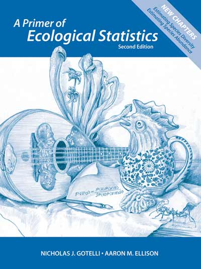
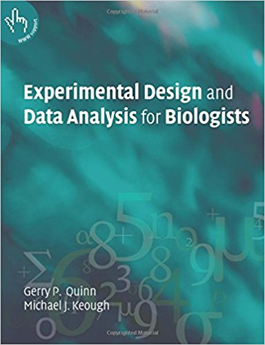

 - **A Primer of Ecological Statistics** - Biblioteca UdeA: 574.5012/G683 Libros guía  __Experimental design and data analysis for biologists__ Biblioteca UdeA: 574.015195/Q7
3 Examenes parciales: 65% Examen 1: 20 % Examen 2: 25% Examen 3: 20 Roses are red, violets are blue. Seguimiento: 35% Trabajo final: 15% Asignacionaciones semanales: 15% Quices online: 5%
Edit YAML front matter Write using R Markdown Use an empty line followed by three dashes to separate slides!